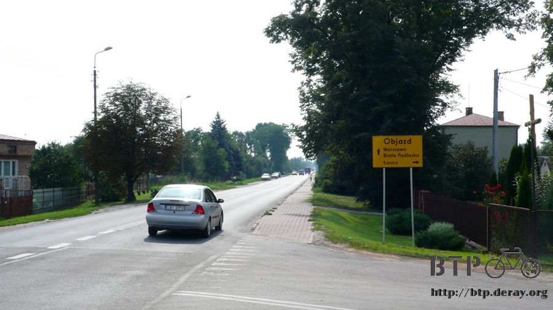

Already Got In Trouble And You Still Want To Leave?
Even though the hotel I stayed in doesn’t have internet like I had wanted, but it still give me a good night’s sleep.
I slept until morning and was ready to go through customs.
This is the last day the visa is good for Belarus, and the first day entering Europe.
The trip started hard and will now get easier since the road condition will be better in Europe.
However, I have to make sure I am able to enter Europe first.
When I checked out of the hotel in the morning, the employee
on duty is different so the price she charged me is also different.
Yesterday they charged me $32USD, but now this guy on duty is charging me $90,000 Belarus Money ($45USD).
He asked me if I used the parking lot? I said I came here on my bike, so she added fee for parking motorcycle.
So first thing in the morning I was already fighting for my rights with the hotel employee.
Good thing I still have the piece of paper the person wrote down with the price on it from last night,
and no charge for bike storage fee either.
When I tried to pay they didn’t accept USD,
so I had to exchange $50USD for Belarus currency in the hotel currency exchange place.
I had already planned to use up all the Belarus currency yesterday but now I got a ton on my hands.

After leaving the hotel I followed signs riding toward Belarus/Poland border.
The crazy map from yesterday really does mean a big river.

Turning right after passing the river, go straight for 2Km (1.2miles) will be the boarder.
Right before getting to the boarder there is control booth, cars also separates here.
I rode over and ask them where I should go on my bike.

The person asked me to take out my passport. I handed my passport over and he started flipping page by page.
I thought what is there to look at? It wasn’t like I came here illegally.
Right after the person flipped through my passport he said,
“Friend, we have problem, and big problem.”
In front 500meter is the border, but I am stopped here and not allowed to go through.
The person said I only have Russia visa, but no Belarus visa so I can’t exit Belarus.
He even wonders how I entered Belarus. Then he started calling his superior.
He talked for a while and then laughed hanging off the phone.
I had thought everything is ok since they had let me entered Belarus, can they stop me from exiting?
After hanging off the phone he told me his superior wanted me to go have a visa done, the address is Balabala Street #12.
Immediately I was so surprised and I didn’t know what to say.
First, I need to exit, and who gets a visa to exit? Second, I just rode here from town, and now I have to ride back.
Even if I need to get a visa, why can’t I do it here?
Three, that Balabala Street #12, how would I know where it is?
I don’t even have a map on me; so telling me riding back to the town is the same as telling me to die.
Four, today is the last valid date for my Russia visa.
So if Belarus visa can’t come down in one day, then I will be staying here illegally.
The problem will just get bigger then.
I was ready to faint right there, but shouldn’t worry about getting into trouble as long as I can solve the problem.
I took out my notepad and asked that boarder patrol guy,
named Sasha, to please write down that Balabala street address on the notebook and draw me a map as well.

The map looks like this. From where I am at start riding back,
pass the river, turn left at the light, then right turn followed by a left turn.
I will get to the visa place like this. The map looks very easy, but really following this map I did find Balabala #12.
The place is inside an alley without a #12 sign, but there are two huge black sign with Russian on it.
However, I don’t know Russian, but this should be the right place.
I parked the bike in the front and then went inside to get my visa.
I know better than to expect someone welcome me in, and saying
“You are the person at the boarder without a visa and need to get a visa done. Follow me, we have someone helping you.”
This is more expectation than winning the lottery.
So once I entered I started asking where can I get a visa?
The other people who are here said 2nd floor, which is this white door.
Right when I was ready to go in to ask about the visa such as time, money,
etc, the person waiting next to the door stopped me. “Please stay in line.”

Right now is 10:30am, my visa will expire in 13 hours, and I still have to wait like everyone else.
Half an hour later it was my turn.
After entering they used half English and half Russian to explain to me I need Belarus visa to exit Belarus.
People who apply for visa are for entering the country, not exiting.
But the visa officer give me this look saying “You in big trouble”, she stood up and tell me to go with her.
This building is separated into left and right halves, and right now I am at the right half.
All the employees are female aged moms in casual clothing.
She took me to the left half and the entire employees in there are cops wearing blue uniforms.
I am just here to apply for a visa, but she took me to see cops, they are so evil.

The cop with 4 stars pinned on his shoulder asked me what I was doing after flipping through my passport?
I quietly said I am a bike rider. Then he got madder and madder,
“How dare you holding Russia visa and entering Belarus? You don’t know this is illegal?
I can now arrest you and let you go sit in jail.”
Even though I wanted to explain when I entered Belarus from Russia I didn’t get stopped.
Besides, when I met cops in Minsk, the capital city in Belarus,
the cop didn’t say anything either after looking at my passport.
But this is hard to explain in both English and Russian.
Besides, Mr. Hou said don’t argue too much with the local cops. Regardless how reasonable you are,
the local cops don’t want to hear. So I just stood straight and listen to him.
For people who had been in the military before (Taiwan requires male military service once into adulthood),
this isn’t difficult.
When the cop mentioned he is considering arresting me, all I thought about was could I be together with my bike?
Otherwise if the bike is alone then it will be gone for sure.
By the time I get out of the jail I will never see him again.
While listening at the same time I wondered how long will I be in jail for?
3 days or 1 month? Will someone get me out?
Will I get on Taiwan’s news? How nice will my fellow jail mates?
And I even thought about how will the jail food tastes?
I have seen movies of breaking out jail before, would I be able to do the same?
After being yelled at for 10 minutes, the cop saw I didn’t have any reaction.
No arguing or explaining from me, just standing there being yelled at,
I seemed like I am thinking about my faults. He sighed and shook his head, and told me to follow him.
So he is finally arresting me, will he give me black and white stripped jail clothing for my picture?
Following the cops getting to another door, inside the door is not jail but a beautiful female cop.
The male cop told her, “Help this guy from Taiwan who is asking for trouble to get a visa.”
Right then I sighed with relief, he wasn’t taking me to jail but help me get out of Belarus.
I immediately bowed with thanks to the male cop; the cop waved his hand and says no need to thank.
However, if I dare to do it again, he will put me to jail.
After he left I sat down on the chair, it really scared me.
It was just a visa; I had thought I only needed to get one, but then the problem get bigger and bigger.
Sitting on the chair looking at the female cop she informed me I need money to get the visa.
Right there I understood what it means “anything that can be solved with money is ok.”

The visa price isn’t cheap at all. To avoid pocketing the money, they do not accept cash.
The female cop wrote something on a piece of paper for me.
I don’t need to look at it to know what it is. On it listed 3 prices, $62,000, $62,000, and $10,000 Belarus monies.

The female cop told me to take this paper to transfer money.
I had wanted to take the notebook to ask her to draw me a map, where can I go to find a bank to make transfer?
Besides the piece of paper didn’t write an account number and such, could the bank deal with this?
I took all these questions with me; let’s leave this place first.
The instant I left the door I immediately thought “I want to run away!”
I was almost arrested, and now I finally got to get out, why shouldn’t I run?
The fugitive path to take is to ride back to Russia in 8 days.
If I hurry a little I might be able to do it in 6 days.
Then I can go to Taiwan business office in Russia to extend my Russia visa.
After that I can ride through St. Petersburg through north Europe.
But I need to do all this before my Russia visa expires.
However, if cop stops me while riding back to Russia, I will be in so big trouble.
Can’t run away, can’t run away, can’t run away.
I need to follow the rules and get a Belarus visa to exit.
Without a map I looked for a bank sign all over the street.
Even though it is hard to find Internet café, but banks are easier to find with a sharp eye.
After entering this bank,
I showed the note I got from the female cop to the bank employee by sticking it on the glass window,
immediately I felt like I am robbing the bank. The banker looked at it and said they can’t process this type of transaction.

In a bank this big and I can’t make a transaction? I can’t believe it.
However, it took me sometime to find this place, how can I just leave?
The note I got list money in Belarus currency, and I don’t have $130,000 on me,
so I exchanged more money with $100USD.
I took $200,000 Belarus money with me trying to find a place I can make this type of transaction.

This is the second bank I found, it is much smaller than the first one I found. There is just one window for transaction here.
So I followed everyone in line. When it got to me I passed the note over.
The big bank I found previously couldn’t make this type of transaction so I wasn’t expecting much with this one.
The banker looked at the note and then at me, “where is the money to do this?”
This is great! This tiny bank can actually process this type of transaction.
So I immediately took out $150,000Belarus money and ask the banker to help me.
Three minutes later when I got my transaction receipt, I couldn’t believe my luck.
Good thing I didn’t start riding back to Moscow, or I would be crying the whole way back.
It is about 11:30am then, almost noon.
My Russia visa is only valid for another 12 hours.
In logical reasoning I expect to get my Belarus visa soon and exit Belarus today.
However, I better not think of logic right now, I should think of how can I use my problem solving skills.
Taking my receipt I went back to the visa place.
I walked to the female cop’s door and knocked.
She is more surprised than I am seeing me returning with the receipt.
After checking to make sure my receipt is valid, now is just waiting.

She asked me to sit on the chair to wait, but not going home and then come back in a few days,
so I was guessing I should be able to get it today.
The wait was over an hour.
I couldn’t sit quietly on the chair, every three minutes I went downstairs to check on the bike to see if it is still there.
Most of the time the bike was ok, but sometimes I see kids being interested in the bike.
If they dare to kick the bike over, I will beat them up.

While I was waiting I looked at some forms used for the visa, this one is used for entering Russia.
They take the A portion away when I enter while B portion is on me.
They will take back the B portion when I leave.
This form clearly states this is used for Russia and Belarus, and I only dared to enter Belarus because I saw this form.
And now they tell me I can’t exit Belarus without a visa?
I always felt time is longer while waiting; I kept checking on the bike and waiting for the visa on the 2nd floor.
After an hour there is good news, after signing some forms, I got my Belarus visa.
This passport is now worth more value with this rare visa.
The corner clearly states $50USD but I made $130,000 Belarus money ($70USD) at the bank earlier.
I just pretend it is for emergency transaction fee.
There are no other words to express my happiness after getting this visa.
The female cop explained this is temporary visa; valid start today, total 3 days.
Does this mean I can have 3 more days on the border?
Who would want to stay here? I took my hot off the press visa and try to exit Belarus again.
However, there is something I need to do.
When I checked out the hotel this morning and when I exchanged
money for the visa I ended up getting some Belarus money on me.
Now I have more and more Belarus money, I need to figure out a way to spend it all.
The store next to the bus stop. I had planned to purchase lots of chocolates,
but I don’t know who was fighting chocolates with me.
After asking all 5 stores they all said they were out.
Finally, I got to one store that is selling chocolates. I purchased 5 packs.
In one breath I spent $10,000 Belarus money ($5.38USD).
I had purchased lots of cakes yesterday, now I need to figure out a way to pack those chocolates,
and then try to exit Belarus again.

After 3 hours I returned, the boarder control guard Sasha saw me,
he stopped what he was doing and asked if I got my visa,
“yes, your map helped me a lot, thank you very much.”
I really wanted to take a picture of Sasha, but he said he couldn’t be in photos while in duty.
So sadly there is no photo of Sasha, using words to describe he looks like Louie from the Mario Brothers cartoon.
At the store next to the border, it also has chocolates.
The store clerk asked me how many I want, I said all of it.
So total I purchased 9 sticks of chocolates and 3 bottles of soda.
I took one bottle of soda back to Sasha, one I drink with my lunch, and taking one bottle with me.
After purchasing all this I also ate lunch here. I ordered fried chicken with fries.
Of course there is also soup, salad, coffee, and bread.
Even though I purchased so many things plus lunch, I only spent $27,000 Belarus money ($14.5USD).
Why is spending money so difficult? I still have at least $60,000 Belarus money ($32.3USD) on me,
how should I spend it?
There is no way to spend it, and no reason to keep it either.
Then I accidentally discovered there are also currency exchange place here.
So I took the $100 Belarus money to exchange for USD. With $60,000 Belarus money I only got back $30USD.

Better than nothing, with USD at least it isn’t worthless.
All the Belarus money left is all coins, I can’t use them to purchase anything, and so I will save them as mementos.
After lunch is time for exiting Belarus, it is about 1pm right now. I took my Belarus visa trying to exit here.

The line is very long. When I met French traveler Inaki, he said it is hard to exit Belarus since bikes are not allowed.
I will have to find a car to exit. Inaki took 2 hours to enter Belarus.
Inaki is French, carrying French passport.
Even though France is under the same European Nation and it took Inaki 2 hours to enter Belarus, then what should I do?
So I rode to the very front riding my bike, the immigration officer stopped me saying bike are not allowed.
Cars and motorcycles are all allowed, but bicycles and pedestrians are not allowed.
I did not see any bus here for me to ride either.
When I was worrying what I should do the immigration officer told me to stop.
He then stopped a van getting ready to go through and asked the driver to take me on.
This is a nice immigration officer. So I took the luggage off and put the bike in the back, started to exit Belarus.
The drivers here are two Belarusian, one is older white haired name Anice, and the younger one is named Mulin.
Being able to ride in their van is my luck.
But when they heard I rode all the way from Beijing to here,
light shine in their eyes, they felt it was their honor to take me.

The customs is the same as before, one side at Poland and one side at Belarus.
However, there is one difference. At the same place there is customs for both Belarus and Poland together.
Originally, one would need to get out of the car at place A to do exit procedure, go back to the car again,
and then get out of the car again to do entrance procedure at Place B, and go back into the car again to enter Place B.
Here just one stops takes care of both exit and entrance procedures,
no need to stop for second time.
Taking my passport and exiting the van, there are lots of cars here the place is totally packed.
It took forever just waiting to get a stamp on my passport.
Anice and Mulin travels between these two countries lots of times, they do not need visa just a stamp on their passport.
One passport can have 10-20 stamps, and they have already gone through one passport and are using the 2nd passport.
I wanted to ask them what do they do traveling between these two countries?

Regardless, it is easy for them to enter and exit between Belarus and Poland.
However, taking me along is taking them longer to exit Belarus.
When I was exiting Belarus the immigration officer looked at it for 30 minutes,
he even used black light to check to see if this is a fake passport.
He took forever to look at it, this is a passport not some famous novel.
Then it is time to check the cars.
Even though it was daylight, they still used flashlight to check the inside of the car, and then asked me what is in the luggage.
I then said in Chinese “it is heroin, cocaine, and these types of stuff, no big of deal.”
Of course they didn’t understand me, and then I opened up my luggage to let them check.
I had felt the whole thing was stupid, but dumber thing is later.
The same customs here is used to exit Belarus immigration,
and then drive 10 meter ahead will proceed with Poland entrance procedure.

It only took Anice and Mulin 30 seconds to get a stamp on their passport, but I got checked over an hour.
I couldn’t believe it took so much for me to enter Poland.
One immigration officer speaking English took a form and said to me,
“We have some questions for you.” Then there are the questions:
Howe much money are you taking to enter Poland?
$500USD.
Is there a place to stay in Poland?
No.
How you plan to spend the night in Poland?
I will find a hotel then. (Never say camping.)
If something happened to you in Poland whom should we contact?
I took out my insurance form and on there is emergency contact phone number on there.
Do you have the paperwork you used to apply for visa?
So I took out the paperwork I got from Taiwan that said I am crossing
Euro-Asia on my bike and asking for assistance when possible.
The person looked at the paperwork and asked that on the paperwork it said I had planned to go through Ukraine,
then how come I biked through Belarus?
I said Ukraine visa is expensive and takes a long time to do
Then will you change your route path in the future?
How is that your business, but I said probably not.
Do you have someone you know in Poland?
I took out Goose’s address and Poland ID copy.
Are you from Taiwan or China?
Wow, so I flipped to the front of my passport which said “Republic of China, Taiwan” to let him figure it out.
So they asked questions like this for an hour, Anice and Mulin smoked a pack of cigarettes outside and I still can’t enter Poland.
Finally, I got through customs, and got my stamp on my passport.
Thank god for help, hopefully when I exit Poland I won’t meet the same treatment.
So at the Belarus immigration boarder control we completed both exiting Belarus and entering Poland procedure.
Now just going straight into Poland with no need to stop.

I had lots of changes left in my bag such as $5, $2, $1 Belarus money,
there is no reason for me to keep them so I gave them to Anice and Mulin as thank you gift for taking me.
I felt bad having them waiting for me for so long.
After entering Poland we stopped at the parking lot of this store, so now just on my own.

A group photo before we all leave, on the right is Mulin, in the middle is Anice,
and the left is me that wanted to shoot myself after so many trouble trying to enter Poland.
Taking out all the bags from the van that hasn’t put back on the bike yet. So many bags,
thank bike for carrying all this during this trip.
So now starting my first day in Poland at 3:30pm after trying to fix the visa problem this morning,
and trying to go through customs/immigration around noontime.

The yellow sign says Objazd in English alphabets.
The strange Russian language is not seen anymore. There is a sign that says Warsaw, so I will follow that.

Same as what I predicted, the road that runs from Belarus to Poland is this E30 freeway and also called Red #2.
So I just need to follow this.

The road condition in Poland is excellent, it is all flat and no holes.
But this also means lots of road are under reconstruction, so it is common to see a stretch of road under construction,
usually a road is cut into sections for reconstruction.
There is no one here to direct traffic, just traffic lights to control the traffic.
If you don’t want to wait you can walk the bike in the middle reconstruction area.
I finally found a sign saying 190km (118 miles) to Warsaw, the capital.
I do not want to go through Warsaw, but from the looks of the map I will have to find other ways to get go around Warsaw.
It is about 483km (300miles) from Poznana, which is the other big city in Poland, where Goose lives.
Including today I plan to use 4 days to get to Poznana to find Goose.

There are lots of gas stations, stores, hotels, and towns along the way; it is not deserted at all.
It is easy to see there are lots of places to get supplies along the way.
But I do not have any Polish money on me (Zit), and I don’t plan to stay in any hotel the next three nights.
So I only need to camp for 3 nights, and then I will arrive at Goose’s all dirty.
Lots of planes in the parking lot, it can be compared to the restaurant that had lots of army tanks in front of it.

I am on Red #2 freeway right now. The whole length of this freeway is approximately 600km (373miles)
with the final end point in Germany. It would take about 5-6 days to ride to Germany.

After entering Poland, the hotel sign is now the easy to understand sign that says “HOTEL”,
but gas station store signs are now “SKLEP”, not the easy to understand Russian I was used to.
So now when I see “SKLEP” I know where I can get beverage and food.

Going inside to purchase some cold soda, I asked the clerk if they accept USD, the clerk said yes.
So I took out the $30USD on me, the clerk used 1USD=2.2Zit (Polish currency) exchange value,
so I only got $66Zit Polish money. This is horrible exchange rate, normally 1USD=2.7Zit.
One 2liter soda is about $7Zit. Just few hours ago one bottle cost $3000Belarus money ($1.61USD),
and now just $7 is really cheap, except it is Zit, Polish money.
I didn’t calculate the exchange rate until after I had opened the bottle and drank the soda.
1Zit=15NT=0.50USD (Taiwan Currency), so $7Zit soda is about $100NT ($3USD).
The same soda only cost half as much in Russia.
The cost of living has risen up another fold, time for living thrifty again although
I don’t know if there is chance to go eat in a restaurant again,
one time not having to worry about the price on the menu.
Bus station in Poland, it looks a lot like a jail.
And to think I almost got arrested today, it is good thing I didn’t fight back to get arrested.
This bus station looks fancy, the ones after this all look cheap, no bench plus lots of graffiti on the walls,
some even don’t have any roof covering. I don’t know if there is a chance to sleep in a bus stop here.
The yellow cross on the street is very interesting, it means the yellow line is drawn wrong;
the next one is the correct one.
On the street you can see the yellow crossed out sign everywhere,
so this road is probably just got paved again.
So even though the road was just paved and the line was drawn incorrectly,
they didn’t even try to mark the cross off, Polish people is pretty interesting.

I started riding at 3:30pm and it got dark around 9pm.
I didn’t eat anything around this time; just drink 2 liter worth of water.
My stomach wasn’t hungry either, so I just ate some cookies for energy.
This is because I want to get to Poznana on Friday, so I must ride at least 100km (62 miles) today.
I wanted to ride some more before sun down so I did not stop to eat dinner.
It is very common to see bikes in Poland.
After getting into farm country, it is common to see bikes as the main traveling tool.
Looking at this bright sky, will it rain today?
I am not sure with my own weather guessing skill.
I confidently said which day it will rain, but I am not sure which day it will not rain.
Even though there aren’t a lot of clouds in the sky, but the air is very humid.

I don’t want to bet too high so I must find a place to sleep for the night. When I was riding by I saw this empty house.

The exterior is ok, some windows broken is fine since this is not our house.
I took the bike to the front to examine the area a bit.

The ad on the front of the house makes it look like the house is for sale.
Whoever purchases this house can open it for 24-hour rest stop.
I go inside to look, it is amazingly clean, no wonder it is a house for sale, it has a lot of potential.

The house is clean, just some places with paint peeling off.
As long as there are no empty bottles inside, then I know this is not a place for homeless people to gather around.
Looking outside from the broken windows, I can still see what is going on,
and it is much cooler inside, no feeling of being trapped inside.
Judging this house from a broken down empty house, this is worth 4 stars.
If there is electricity, then it is 5 stars. So I spent my first night in Poland here.
After cleaning up myself a bit, I got scared by a bird that flew in from the hole in the ceiling.
The bird built a nest underneath the roof. Just let me stay here for the night,
I won’t bother you, please do not poop on my head during the night.
In this great house I actually didn’t sleep the whole night.
I rolled around and couldn’t understand why.
I had already gotten into Europe, and found a comfortable place to sleep.
My stomach was growling the whole night, but I shouldn’t be so hungry I can’t sleep.
The final conclusion is that because the trip is almost ending, the whole feel is different once entering Europe;
I am so excited so I lost sleep.